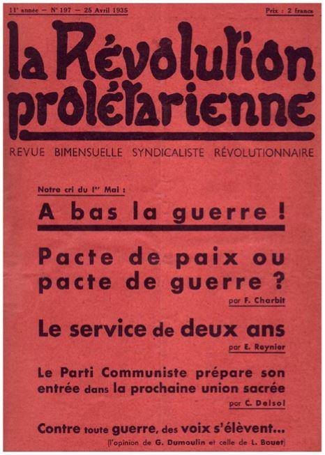

Si le XXème siècle a été le témoin des conflits les plus dévastateurs de l’histoire de l’humanité, le XXIème siècle voit la prolifération des engagements militaires qui conduisent à reformuler les justifications possibles de la guerre. En effet, depuis les évènements du 11 septembre 2001 et à la suite de nombreuses opérations militaires conduites par les États-Unis ou ses alliés en Afghanistan, en Irak, en Lybie, en Syrie et au Mali. Toutes ont donné lieu à un débat sur la légitimité de tels engagements et de ce fait, connue une remise en cause, quelquefois radicale, des justifications traditionnelles de la guerre. Légitime défense et pacifisme ont été les thèses en présence, c’est pourquoi il convient de poser à nouveau une question qui avait été laissé de côté par les théoriciens de la guerre qui, comme Clausewitz concevaient cette dernière comme la poursuite de la politique mais par d’autres moyens. Cette question a trait aussi bien à la moralité qu’à la politique et il semble qu’elle doive se situer au confluent des deux : si la guerre a fait l’objet de justifications juridiques et morales dans la doctrine de la « juste guerre » occidentale cette dernière a été écartée depuis par la conception moderne de la souveraineté et du « droit de la guerre ».
L’ancien concept occidental de la guerre juste
Depuis l’antiquité, le recours à la guerre a dû respecter un certain nombre de règles1. Ainsi à Rome, l’ouverture des hostilités supposait le recours à des rites solennels, comme planter une lance en territoire ennemi.
L’église a tôt fait de se confronter à la question de la guerre, en s’interrogeant à juste titre si les chrétiens qui servaient dans des troupes armées péchaient lorsqu’ils tuaient leurs ennemis ?
Mais les pères de l’église occidentale s’étaient toujours refusés à condamner à cette occasion la guerre elle-même. En conséquence « Augustin2 », admet que la guerre puisse quelquefois être nécessaire et soutient qu’elle s’inscrit dans les desseins providentiels et donne une définition particulière de la guerre « juste » qui a pour but de venger les injustices, lorsqu’un peuple ou un État à qui la guerre doit être faite, a omis de punir les méfaits des siens ou de restituer ce qui lui avait été ravi au moyen des injustices.
Le christianisme s’est efforcé de limiter le recours à la guerre qui doit avoir une justification juridique et morale qu’étaient les croisades, non pas au sens propre des guerres de religion, mais justifiées par des motifs comme le seront : l’appel à l’aide de l’empire de Byzance à participer à son intégralité territoriale, la récupération des territoires ayant jadis appartenus à l’empire romain (dont la chrétienté se considérait comme l’héritière légitime) la punition des méfais des musulmans qui persécutaient et rançonnaient les pèlerins et les habitants chrétiens de Palestine.
À plusieurs reprise l’église s’est désolidarisée des agissements des croisés et avait condamné ouvertement leurs entreprises lorsqu’elles s’écartaient trop ouvertement des buts qui leur avaient été assignés 3 car on ne cherchait pas à convertir les populations au christianisme mais seulement à les soumettre à l’autorité temporelle de la chrétienté.
Dans les royaumes occidentaux, l’église s’efforçait de mettre un terme aux guerres privées qui ravageaient les campagnes, ainsi qu’à des pratiques telles que l’ordalie4 appelée également le jugement de dieu. De même, elle promeut « la trêve de Dieu » interdisant de combatte certains jours qui devenaient de plus en plus nombreux.
Le fondement de la doctrine de la guerre juste reposait sur un calcul de proportionnalité entre les maux de guerre et ceux qu’elle sert à combattre ; car il fallait prendre garde à ce que la guerre n’entraine pas de plus grands maux que ceux qu’elle prétendait éviter. Mais il était possible, voire nécessaire d’avoir recours à la guerre pour éviter un mal pire que celle-ci. L’essor de la souveraineté moderne a conduite à l’abandon de la doctrine de la juste guerre.
Naissance de la guerre comme fait du prince
La souveraineté moderne, conçue comme une puissance absolue et perpétuelle, ou encore, par Hobbes5 comme un pouvoir exorbitant, accorde dès lors au souverain un droit absolu de faire la guerre et la paix. Dans ce contexte la doctrine de la « juste guerre » se trouve dépourvue du fondement religieux pouvant censurer ses actions.
L’affermissement de la souveraineté absolue du monarque, qui ne reconnaissait aucun Juge supérieur -et qui n’acceptait pas d’être assujetti à des normes auxquelles il ne voulait pas volontairement consentir- a précipité le déclin de la problématique juridico morale de la guerre et le caractère de la cause de la guerre est dès lors livré à la subjectivité des hommes.
La question auparavant jugée essentielle du jus ad bellum6, à savoir des justes motifs de faire la guerre, cède le pas à une conception plus concrète du droit dans la guerre le jus in bello7.
Grotius8 penseur protestant, avait mis l’accent sur ce dernier, sans toutefois abandonner la problématique traditionnelle, il développe longuement toutes les règles relatives à la conduite des opérations militaires, car d’après lui, la guerre doit être conduite comme un procès en justice. Après lui, et au fils des siècles, d’autres exposeront les normes relatives aux déclarations de guerre, les trêves, les espions, les territoires occupés, les prisonniers. Bien qu’un certain formalisme doive être respecté, la justice de la cause n’est plus l’essentiel.
À l’ombre du souverain et des droits des peuples, issu de l’école du droit de la nature des gens qui fonde le droit international moderne, se développera en concomitance le droit de la guerre moderne.
L’idée de neutralité, qui traduit l’acceptation du droit des États souverain de faire la guerre, se développe progressivement telle la convention de la Haye en 1907, qui instaure des règles permettant aux belligérants d’exercer certains pouvoirs exceptionnels9. À l’opposé de la convention de Genève, signé en 1929, qui fixe de nombreuses interdictions, comme celles d’interroger, maltraiter ou tuer les prisonniers.
Le pacifisme a mené à plusieurs guerres
Les guerres du 20ème siècle sont souvent menées autant à l’encontre des armées ennemies qu’à l’encontre des civils. Par la capacité de destruction sans précédent qu’elles ont déployées elles ont ouvert la voie aux mouvement pacifiste, qui rejette toute légitimité de la guerre. Les conflits les plus meurtriers de tous les siècles ont marqué les esprits, et des voix s’élèvent pour que les armes utilisées ne soient plus jamais employées dans les hostilités.
Puissant sentiment, qui a traversé le 20ème siècle dès la fin de la première guerre mondiale, le mouvement pacifiste voit se développer un peu partout dans le monde et notamment en France ou une abondante littérature titre sur les horreurs de la guerre qui expliqueront un engouement certain pour le pacifisme, par-delà des justifications glorieuses et subjectives de la guerre de divers gouvernements.
En France le pacifisme est présent dans les partis de droite comme de gauche et la peur que provoque la guerre a conduit à l’aveuglement des hommes politiques occidentaux alors mise hors la loi par le pacte Briand Kellog en 1928.
Alors que la menace de nouveaux conflits en Europe s’annonçait, force est de constater que la grande majorité des États européens, soutenue par une majorité de leurs concitoyens, furent aveugles à cette évidence.
À cet égard l’armistice en 1940 a été pris dans un premier temps comme un soulagement. Le pacifisme s’est montré incapable d’éviter la guerre mais surtout a conduit non seulement à la lâcheté mais également à l’imprévoyance.
Néanmoins le pacifisme, conjugué à un antimilitarisme primaire restait attrayant pour sa simplicité de raisonnement et entrainait de nouveau certains pays à baisser leur garde et à privilégier la non-violence comme créneau de vie.
Alors que la non-violence suppose que les deux parties en présence partagent peu ou prou les mêmes valeurs, ou en tout cas que le plus fort accepte de limiter l’usage de la force au nom de certains principes, et notamment le respect de la personne, n’a eu aucun effet face aux totalitarismes.
Le pacifisme s’est montré incapable d’éviter la guerre, il a conduit non seulement à la lâcheté de la non intervention lors de la l’occupation de la Rhénanie en 1936, n’a pas empêché la guerre d’Espagne, scella le sort de la Tchécoslovaquie abandonné à Hitler par la Grande Bretagne et la France au grand soulagement de leur population respective.
Alors que ce n’était que le prélude à la Seconde Guerre mondiale. Aussi l’attrait d’un pacifisme naïf doit être relativisé. La non-violence n’a eu aucun effet face au totalitarisme et fut au contraire utilisé par eux pour discréditer et miner les acteurs d’une politique plus rigide alors que l’auto défense non seulement est un droit mais aussi un devoir.
Pacifisme et guerre froide
Alors que la guerre froide battait son plein et que l’URSS, au même titre que les États-Unis, s’était doté de la bombe atomique ; le pacifisme avait refait surface comme argumentaire contre l’arme nucléaire. Les pacifistes mettant en exergue le fait que le recours à l’arme nucléaire serait pire que ceux que ce recours était censé éviter.
Mais il ne tenait pas à l’évidence des actes, la dissuasion nucléaire a de fait empêché la guerre, bien que comme Augustin une absence de guerre n’est pas une paix véritable, d’où la guerre froide. Il est en outre reconnu que la majorité des mouvements pacifistes à l’ouest avaient été gangrénés par les services de renseignement des pays du Pacte de Varsovie.
Les justifications de la guerre ont été repensées dans le contexte actuel
Depuis le XXème siècle le principe du droit des peuples à disposer d’eux même a rendu légitime les guerres d’indépendances, tandis que les guerres de colonisations ou assimilés ont été discréditées, alors que l’ONU n’a jamais censuré ces guerres partant du postulat qu’une nation, une fois auto constituée comme telle, pouvait légitiment aspirer à la reconnaissance de sa souveraineté sur le territoire qu’elle occupe.
Mais le droit international a lui-même évolué à cette occasion. Une résolution a admis le droit d’ingérence dans les affaires internes d’un pays souverain afin de venir en aide à la population victime d’exactions menées par son propre gouvernement. Aussi de plus en plus, les considérations tirées du respect des droits de l’homme sont intégrées dans l’intervention armée. La guerre menée contre l’Irak de Saddam Hussein fut ainsi un tournant dans la mesure où les Nations Unies avait « clairement » défini l’Irak comme étant l’agresseur par le viol de la souveraineté du Koweit.
Dès le XXIème siècle les motifs évoluent en fonction de l’état d’esprit de la communauté internationale, ainsi la légitime défense a conduit la communauté internationale à admettre la riposte américaine en Afghanistan non sans crainte au sujet de la conduite de ces opérations militaires et leurs répercussions sur les populations civiles. En conséquence, la problématique morale n’est plus absente du débat sur la guerre mais ces considérations doivent être étroitement encadrées par le droit international afin d’éviter les excès de subjectivité tant il est vrai que tout pays belligérant est « juge et partie » en la matière.
L’apparition d’une forme, sinon nouvelle, de menace sous la forme du terrorisme international a conduit à s’interroger sur la légitimité des moyens mis en œuvre pour le combattre. Le 11 septembre puis les attentats qui suivirent ont frappé les esprits de la communauté internationale et fait passer l’idée de la nécessité de conduire une guerre contre les terroristes et ses protecteur les talibans dans un premier temps puis quelques années plus tard contre Daesch en Syrie qui à l’inverse de la guerre du Vietnam, est apparue légitime à la population américaine car elle a directement touché les citoyens américains au cœur même de leur pays. Face à la négation des valeurs humanistes de l’occident, mais aussi celles portés par l’Islam et toutes les autres religions, la riposte a été inévitable
Contrairement aux thèses pacifistes, certaines guerres peuvent être légitimes si elles restent limitées et encadrées par le droit international, cela ne doit pas nous faire oublier que, s’il peut y avoir des guerres justes, il n’y a pas de guerre propres, l’image des frappes chirurgicales ne doit pas faire oublier ce qu’ont été de tout temps les horreurs de la guerre.
A.W.
NOTES
1 (Respect des hérauts, trêves pour enterrer les morts, devoir laisser la vie sauve eaux vaincus)
2 Augustin d'Hippone (latin : Aurelius Augustinus) ou saint Augustin, né le 13 novembre 354 à Thagaste (l'actuel Souk Ahras, Algérie), un municipe de la province d'Afrique, et mort le 28 août 430 à Hippone (l'actuelle Annaba, Algérie), est un philosophe et théologien chrétien romain de la classe aisée, ayant des origines berbères1,2. Avec Ambroise de Milan, Jérôme de Stridon et Grégoire le Grand, il est l'un des quatre Pères de l'Église occidentale et l’un des trente-six docteurs de l’Église.
3 Innocent III pour la prise de Byzance en 1204 ou à la suite des excès de la croisade albigeoise.
4 L'ordalie, ou « jugement de Dieu », était une forme de procès à caractère religieux qui consistait à soumettre un suspect à une épreuve, douloureuse voire potentiellement mortelle, dont l'issue, théoriquement déterminée par une divinité ou Dieu lui-même, permettait de conclure à la culpabilité ou à l’innocence du dit suspect. L'ordalie, pratiquée en Occident surtout au Moyen Âge, reposait sur des croyances et postulats religieux : si l'accusé était innocent, Dieu, qui le savait, l'aidait à surmonter l'épreuve. Pour autant, cette forme de justice n'était pas nécessairement mise en œuvre par des autorités religieuses. Elle fut finalement condamnée par l'Église chrétienne.
5 Thomas Hobbes (5 avril 1588 – 4 décembre 1679 en Angleterre) est un philosophe anglais. Son œuvre majeure, le Léviathan, eut une influence considérable sur la philosophie politique moderne, par sa conceptualisation de l'état de nature et du contrat social, conceptualisation qui fonde les bases de la souveraineté. Quoique souvent accusé de conservatisme excessif, ayant inspiré des auteurs comme Maistre et Schmitt, le Léviathan eut aussi une influence considérable sur l'émergence du libéralisme et de la pensée économique libérale du XXe siècle, et sur l'étude des relations internationales et de son courant rationaliste dominant : le réalisme.
6 Le Jus ad bellum est parfois considérée comme faisant partie des lois de la guerre, mais le terme de "lois de la guerre" peut aussi être considéré comme se référant au jus in bello, qui s'occupe de savoir si une guerre est menée de façon juste. Le jus ad bellum fait référence aux "raisons légitimes qu'un État peut avoir de s'engager dans la guerre."3 Il s'agit d'établir des critères à propos de ce qui fait une guerre juste.
7 Le droit international humanitaire, ou jus in bello, réglemente la manière dont la guerre est conduite. À vocation purement humanitaire, cette branche du droit vise à limiter les souffrances causées par la guerre, indépendamment de considérations ayant trait à la justification, ou aux motifs, ou encore à la prévention de la guerre, couverte par le jus ad bellum.
8 La théorie médiévale des droits (iura, le pluriel de ius) débute principalement avec Thomas d'Aquin pour qui le mot « droit » désigne la chose juste elle-même. Pour lui et ses successeurs directs, le droit est ce qui est conforme à la loi naturelle. Pour les médiévaux à la suite de Thomas d'Aquin, le droit est objectif et s'applique aux choses. En général, les spécialistes du droit naturel estiment que Grotius a beaucoup œuvré pour que le droit prenne sa signification actuelle et désigne les moyens ou le pouvoir de faire telle ou telle chose. Grotius écrit : « Le droit est une qualité morale attachée à l'individu pour posséder ou faire justement quelque chose. Ce droit est attaché à la personne » (Le Droit de la guerre et de la paix, I,1,IV)..
9 Envahir et occuper le territoire ennemi, détruire les forces adverses, réquisitionner et confisquer certains types de biens ennemis, inspecter, saisir et confisquer certains types de biens considérés comme des nécessités militaires.
Partager cette page